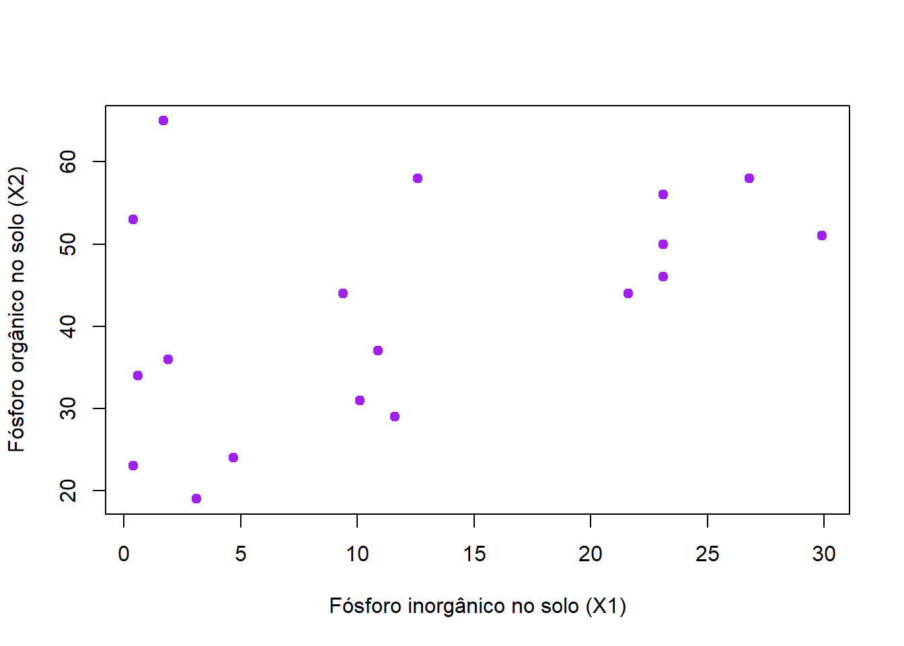
11 Análise de Resíduos e Diagnósticos
Nessa aula, vamos apresentar os principais gráficos utilizados para avaliar a adequacidade de um modelo de regressão linear. Depois, traremos algumas estratégias utilizadas quando há violação dos pressupostos, dentre elas a família Box-Cox de transformações.
Essa aula é baseada no Capítulo 4 - Análise de Resíduos e Diagnósticos da apostila Modelos de Regressão (Demétrio e Zocchi, 2011) e no livro Applied Linear Statistical Models (Kutner et al., 2008) (Capítulo 3).
11.1 Exemplos práticos
Para melhor compreensão do conteúdo dessa aula, vamos utilizar algumas bases de dados como exemplos. Elas estão descritas na sequência. Ambos os exemplos foram retirados de Demétrio e Zocchi (2011).
Exemplo 1: Fosforo
Os dados da Tabela a seguir (Snedecor e Cochran, 1967) referem-se a medidas de concentrações de fósforo inorgânico (\(X_{1}\)) e fósforo orgânico (\(X_{2}\)) no solo e de conteúdo de fósforo (\(Y\)) nas plantas crescidas naquele solo. O objetivo desse tipo de experimento é estudar a relação existente entre o conteúdo de fósforo na planta e duas fontes de fósforo no solo.
| Amostra | \(X_{1}\) | \(X_{2}\) | \(Y\) | Amostra | \(X_{1}\) | \(X_{2}\) | \(Y\) |
|---|---|---|---|---|---|---|---|
| 1 | 0,4 | 53 | 64 | 10 | 12,6 | 58 | 51 |
| 2 | 0,4 | 23 | 60 | 11 | 10,9 | 37 | 76 |
| 3 | 3,1 | 19 | 71 | 12 | 23,1 | 46 | 96 |
| 4 | 0,6 | 34 | 61 | 13 | 23,1 | 50 | 77 |
| 5 | 4,7 | 24 | 54 | 14 | 21,6 | 44 | 93 |
| 6 | 1,7 | 65 | 77 | 15 | 23,1 | 56 | 95 |
| 7 | 9,4 | 44 | 81 | 16 | 1,9 | 36 | 54 |
| 8 | 10,1 | 31 | 93 | 17 | 26,8 | 58 | 168 |
| 9 | 11,6 | 29 | 93 | 18 | 29,9 | 51 | 99 |
Exemplo 2: Ratos
Os dados a seguir referem-se a tempos de sobrevivência de ratos após envenenamento com 3 tipos de venenos e 4 diferentes tratamentos (Box e Cox, 1964).
| Tempo | Tipo | Trat. | Tempo | Tipo | Trat. | Tempo | Tipo | Trat. | Tempo | Tipo | Trat. |
|---|---|---|---|---|---|---|---|---|---|---|---|
| 0,31 | 1 | 1 | 0,45 | 1 | 1 | 0,46 | 1 | 1 | 0,43 | 1 | 1 |
| 0,82 | 1 | 2 | 1,10 | 1 | 2 | 0,88 | 1 | 2 | 0,72 | 1 | 2 |
| 0,43 | 1 | 3 | 0,45 | 1 | 3 | 0,63 | 1 | 3 | 0,76 | 1 | 3 |
| 0,45 | 1 | 4 | 0,71 | 1 | 4 | 0,66 | 1 | 4 | 0,62 | 1 | 4 |
| 0,36 | 2 | 1 | 0,29 | 2 | 1 | 0,4 | 2 | 1 | 0,23 | 2 | 1 |
| 0,92 | 2 | 2 | 0,61 | 2 | 2 | 0,49 | 2 | 2 | 1,24 | 2 | 2 |
| 0,44 | 2 | 3 | 0,35 | 2 | 3 | 0,31 | 2 | 3 | 0,40 | 2 | 3 |
| 0,56 | 2 | 4 | 1,02 | 2 | 4 | 0,71 | 2 | 4 | 0,38 | 2 | 4 |
| 0,22 | 3 | 1 | 0,21 | 3 | 1 | 0,18 | 3 | 1 | 0,23 | 3 | 1 |
| 0,30 | 3 | 2 | 0,37 | 3 | 2 | 0,38 | 3 | 2 | 0,29 | 3 | 2 |
| 0,23 | 3 | 3 | 0,25 | 3 | 3 | 0,24 | 3 | 3 | 0,22 | 3 | 3 |
| 0,30 | 3 | 4 | 0,36 | 3 | 4 | 0,31 | 3 | 4 | 0,33 | 3 | 4 |
11.2 Principais gráficos
Segundo Demétrio e Zocchi (2011), as técnicas informais utilizadas na verificação do ajuste de um modelo referem-se à avaliação visual de alguns gráficos. Apesar da subjetividade inerente a muitas análises gráficas, essas visalizações são úteis na identificação de padrões e de pontos atípicos.
Listamos a seguir os principais tipos de gráficos que podem ser utilizados para avaliar o ajuste de um modelo de regressão linear. Notem que os dois primeiros gráficos da sequência não são feitos com os resíduos do modelo. podendo ser parte de uma análise exploratória dos dados.
11.2.1 Valores observados (\(Y\)) vs variáveis explicativas (\(X_{j}\))
Indica a estrutura que pode existir entre a variável dependente e as variáveis explicativas. Pode indicar, também, a presença de heterocedasticidade, pois por meio desse gráfico avaliamos a variabilidade de (\(Y\)) em diferentes níveis de (\(X_{j}\)).
No caso de muitas variáveis explicativas, as análises individuais de \(Y\) vs \(X_{j}\) podem levar uma interpretação enganosa, porque parte da estrutura da variância pode estar associada a outras variáveis. Por isso, o gráfico de resíduos vs valores ajustados é geralmente mais informativo, ja que ele já combina o efeito de todas as covariáveis no modelo.
Aplicação aos dados do Exemplo 1 - fósforo
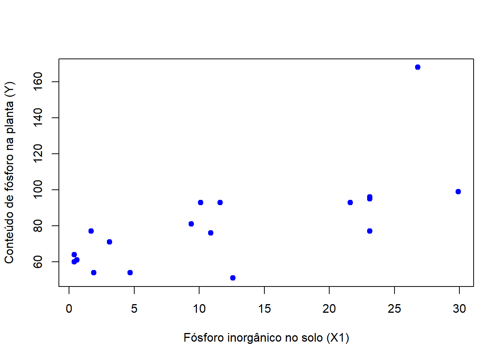
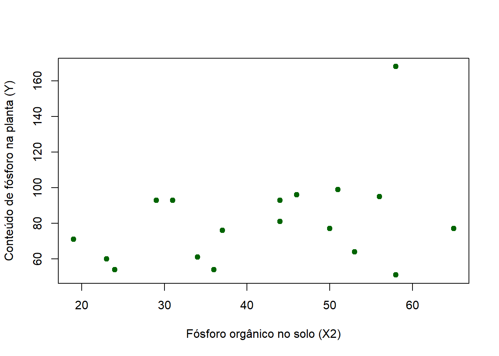
- O que vocês enxergam na relação entre cada variável explicativa e \(Y\)?
- A relação parece linear?
- A variabilidade de \(Y\) (espalhamento dos pontos) muda ao longo de \(X_{j}\)?
Aplicação aos dados do Exemplo 2 - ratos
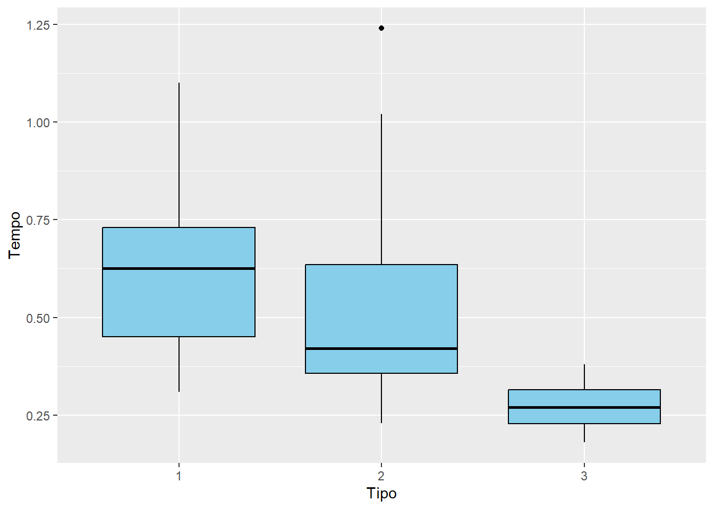
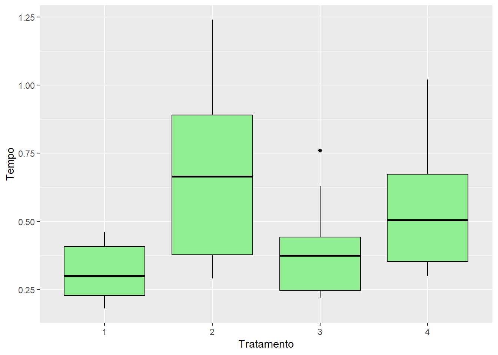
- A variabilidade de \(Y\) (espalhamento dos pontos) muda ao longo das categorias das variáveis explicativas?
11.2.2 Variável explicativa (\(X_{j}\)) vs variável explicativa (\(X_{j'}\))
Esse tipo de gráfico pode indicar a estrutura existente entre duas variáveis explicativas, bem como a presença de heterocedasticidade. Porém, como no gráfico anterior, pode levar a uma impressão equivocada quando há muitas variáveis explicativas.
Aplicação aos dados do Exemplo 1 - fósforo
- Há alguma tendência linear clara entre \(X_{1}\) e \(X_{2}\)?
- Se houvesse uma forte relação, como isso afetaria a regressão?
11.2.3 Resíduos vs variáveis explicativas
Pode mostrar se ainda existe uma relação sistemática entre os resíduos e a variável \(X_{j}\) já incluída no modelo. O padrão para esse tipo de gráfico é uma distribuição aleatória de média 0 e amplitude constante. Desvios sistemáicos podem indicar que a pressuposição de linearidade está sendo violada. Por exemplo, pode indicar que está faltando um termo de ordem superior (ex: quadrático).
Como os gráficos anteriores, pode levar a uma impressão equivocada quando há muitas variáveis explicativas.
Aplicação aos dados do Exemplo 1 - fósforo
Para essa aplicação, considere o modelo de regressão múltipla:
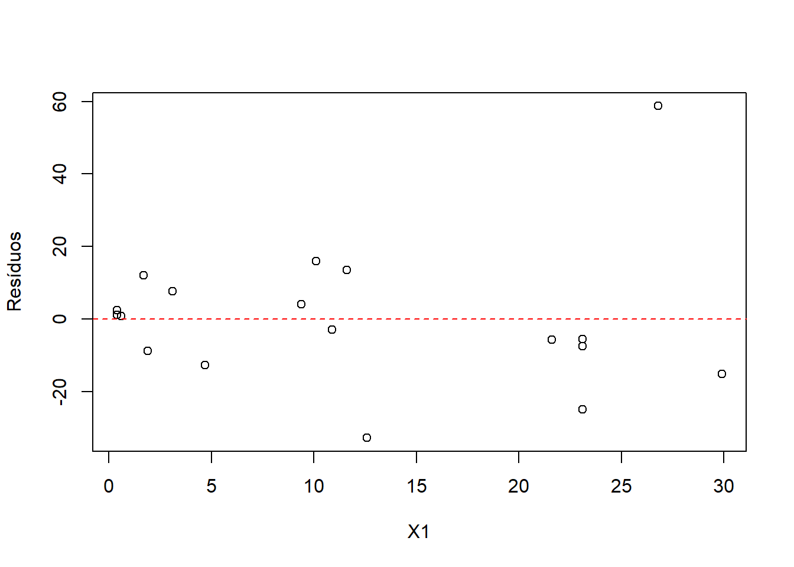
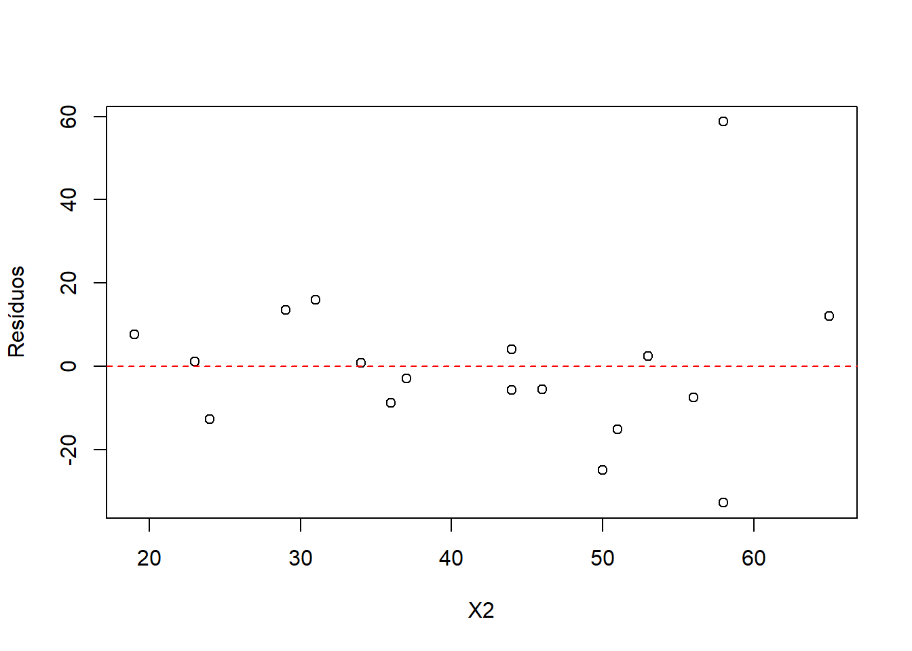
Também podem ser feitos gráficos de resíduos vs variáveis que não foram incluídas no modelo. Nesse caso, é possível avaliar se a inclusão de tal variável poderia melhorar o modelo.
Na análise de regressão múltipla há algumas alternativas interessantes para os gráficos apresentados até o momento. Os added-variable plots (ou gráficos de variáveis adicionadas) e os Partial Residual Plots permitem o estudo dos efeitos de variáveis explicativas específicas, mas controlando para a influência de outras explicativas. Para mais detalhes, consulte a Seção 4.4 de Demétrio e Zocchi (2011).
11.2.4 Resíduos vs valores ajustados
Nesse tipo de gráfico, colocamos os valores ajustados (\(\hat{y}_i\)) no eixo x e os resíduos (\(\hat{\varepsilon}_i = y_i - \hat{y}_i\)) no eixo y. O padrão desejado para esse tipo de gráfico é uma distribuição aleatória de média 0 e amplitude constante.
Quando há heterocedasticidade, os resíduos “se abrem” ou “se fecham” conforme aumentam os valores ajustados. O padrão típico é o de funil: variância pequena para valores ajustados baixos e grande para altos (ou o contrário).
Aplicação aos dados do Exemplo 1 - fósforo
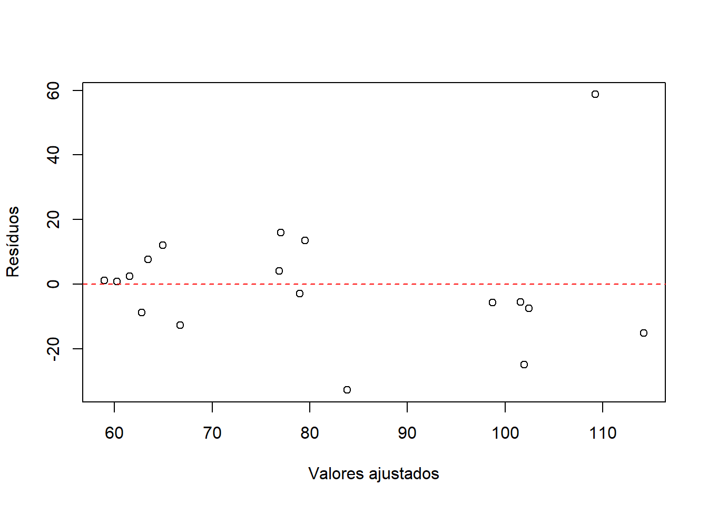
Consulte a Seção 7.3 de Introduction to Modern Statistics (2e). As autoras apresentam diversas situações em que esse tipo de gráfico pode ser usado como uma ferramenta para identificar pontos discrepantes.
11.2.5 Valores observados (\(Y\)) ou resíduos vs tempo
Segundo Demétrio e Zocchi (2011), mesmo que tempo nãoo seja uma variável incluída no modelo, gráficos de respostas (\(Y\)) ou de resíduos versus tempo devem ser feitos sempre que possível. Eles podem levar à detecção de padrões devido ao tempo ou a alguma variável correlacionada com o tempo.
Kutner et al. (2008) denominam essas representações de gráficos de sequência.
11.2.6 Gráficos normal e semi-normal de probabilidades (Normal Plots e Half Normal Plots)
A normalidade dos erros é um dos pressupostos do MRL. Pequenos desvios da normalidade não causam sérios problemas. Por outros lados, grandes desvios são preocupantes. Esse pressuposto pode ser estudado informalmente por meio de vários gráficos como box plot, histograma, gráfico de pontos e gráfico de ramos e folhas dos resíduos. No entanto, o número de observações precisa ser razoavelmente grande para que esses gráficos transmitam uma informação adequada sobre o formato da distribuição dos resíduos.
Outra ferramenta gráfica interessante é o gráfico de probabilidades normal dos resíduos. Eles permitem a identificação da distribuição originária dos dados e de valores que se destacam no conjunto.
De maneira geral, ele é um gráfico de quantis ordenados de um conjunto de dados versus os quantis ordenados de outro conjunto de dados. Cada ponto (\(x,y\)) refere-se ao quantil de uma distribuição do eixo vertical (\(y\)) contra o quantil correspondente de outra distribuição ao longo do eixo horizontal (\(x\)). Se as duas distribuições são similares, os pontos situam-se na linha de identidade, \(y=x\).
Os quantis dos dois conjuntos de dados podem ser observados ou teóricos. Quando os quantis de um banco de dados real são plotados com os quantis correspondentes de uma distribuição teórica (aqui, a normal), o gráfico resultante serve como uma ferramenta visual para verificar o quanto o conjunto de dados pode ser descrito pela distribuição teórica. Por relacionar valores de quantis esse gráfico também recebe o nome de Q-Q plot.
Seja uma amostra aleatória de tamanho \(n\) e as estatísticas de ordem correspondentes aos resíduos do modelo ajustado são \(d_{(1)}, d_{(2)}, ... , d_{(i)}, ... , d_{(n)}\). Se a amostra for proveniente de uma normal, então os valores das estatísticas de ordem e os \(Z_i\) correspondentes, obtidos da distribuição normal padrão são linearmente relacionados. Portanto, o gráfico dos valores, \(d_{(i)}\) versus \(Z_{i}\) deve ser uma reta, aproximadamente.
De acordo com Demétrio e Zocchi (2011), formatos aproximados comuns que indicam ausência de normalidade são:
– S: indica distribuições com caudas muito curtas, ou cujos valores estão muito próximos da média,
– S invertido: indica distribuições com caudas muito longas e, portanto, presença de muitos valores extremos,
– J e J invertido: indicam distribuições assimétricas, positivas e negativas, respectivamente.
A construção do gráfico semi-normal de probabilidades (half normal plot) é o resultado do conjunto de pontos obtidos por valores \(|d|_{(i)}\) versus \(Z_i\) em que \(Z_i = \Phi^{-1}\!\left(\frac{i + n - 0,125}{2n + 0,5}\right)\), em que \(\Phi^{-1}(\cdot)\) é a função acumulada da distribuição Normal padrão.
Na literatura especializada, recomenda-se o uso do gráfico normal de probabilidades para resíduos e o gráfico semi-normal de probabilidades (half normal plot) para medidas positivas como é o caso de \(h\) (leverage) e da distância de Cook modificada.
Aplicação aos dados do Exemplo 1 - fósforo
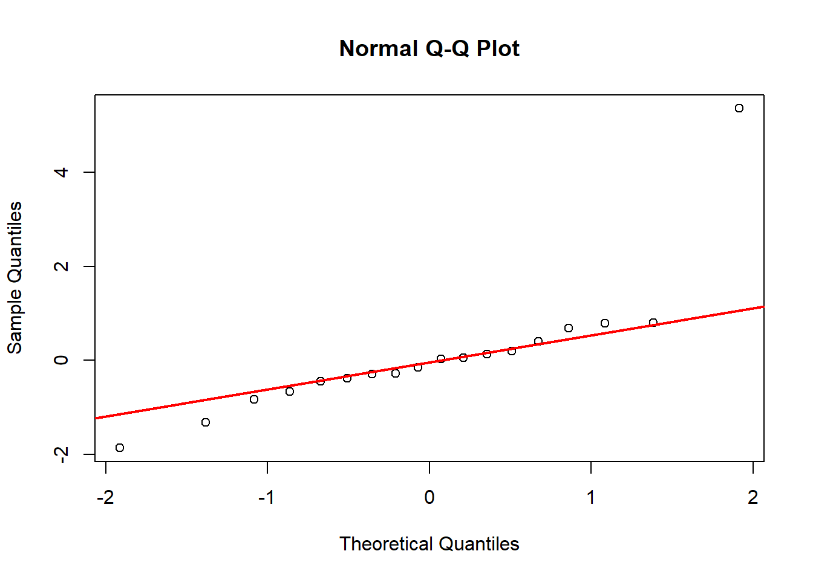
Para auxiliar na interpretação do gráfico semi-normal de probabilidades (half normal plot), Atkinson (1985) propôs a adição de um envelope simulado. Este envelope é tal que sob o modelo correto as quantias (resíduos, leverage, distância de Cook etc) obtidas a partir dos dados observados caem dentro do envelope (Demétrio e Zocchi, 2011).
11.2.7 Gráficos de índices
Servem para localizar observações com resíduo, \(h\) (leverage), distância de Cook modificada etc, grandes. No R, alguns gráficos de diagnóstico padrão são gerados com a função plot().
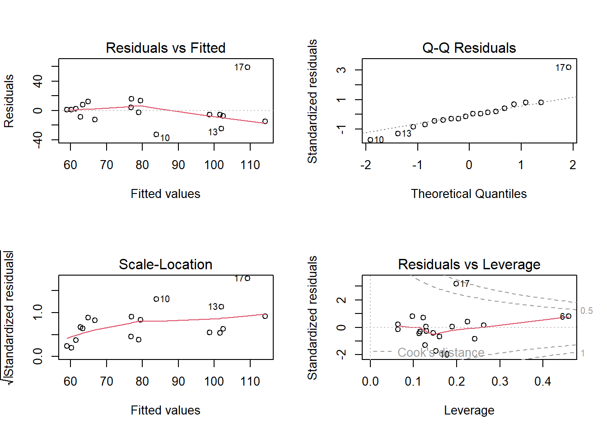
Outra função interessante é a influencePlot() do pacote car.
Warning: package 'car' was built under R version 4.3.3Loading required package: carDataWarning: package 'carData' was built under R version 4.3.3Warning in plot.window(...): "id.method" is not a graphical parameterWarning in plot.xy(xy, type, ...): "id.method" is not a graphical parameterWarning in axis(side = side, at = at, labels = labels, ...): "id.method" is not
a graphical parameter
Warning in axis(side = side, at = at, labels = labels, ...): "id.method" is not
a graphical parameterWarning in box(...): "id.method" is not a graphical parameterWarning in title(...): "id.method" is not a graphical parameterWarning in plot.xy(xy.coords(x, y), type = type, ...): "id.method" is not a
graphical parameter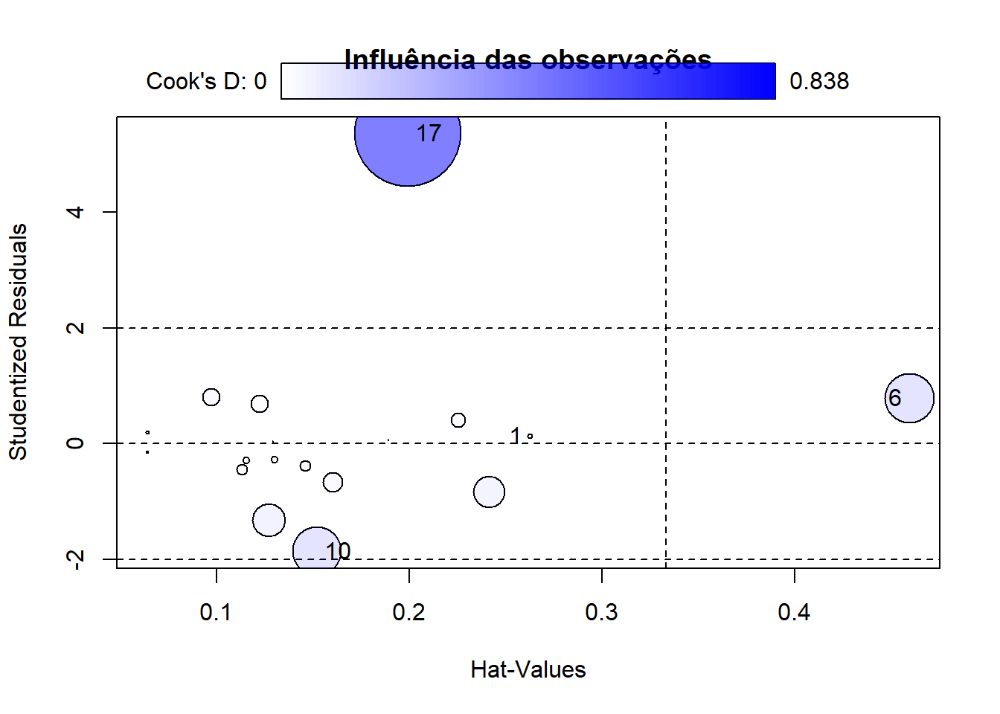
StudRes Hat CookD
1 0.1328713 0.2626034 0.002242622
6 0.7839791 0.4595353 0.178789920
10 -1.8603732 0.1523275 0.178094925
17 5.3603492 0.1994649 0.83767468311.3 Medidas corretivas quando há violação de pressupostos
Se um modelo de regressão linear não for apropriado para um conjunto de dados, há dois caminhos básicos a seguir: 1) abandonar o modelo de regressão e usar um modelo mais apropriado ou 2) aplicar uma transformação nos dados de forma que o modelo ajustado aos dados transformados seja apropriado. Segundo Kutner et al. (2008), cada uma dessas escolhas traz vantagens e desvantagens. A primeira pode levar a um modelo que conduz melhores insights, porém mais complexo em termos de procedimentos de estimação. Já o uso de transformações pode envolver menos parâmetros que um modelo mais complexo, o que é uma vantagem quando temos amostras pequenas. Por outro lado, em algumas situações as transformações podem ofuscar conexões fundamentais entre as variáveis.
A seguir está uma breve discussão para algumas situações específicas:
Não linearidade da função de regressão: Quando a função de regressão é não linear, uma solução imediata é modificar o modelo. Outras formas funcionais como os modelos polinomiais ou não lineares podem retratar melhor a relação entre as variáveis. A transformação nos dados pode linearizar, pelo menos aproximadamente, uma função de regressão não linear.
Erros não independentes\(^1\): Esse pressuposto é um dos mais importantes, mas o mais difícil de verificar. É extremamente difícil garantir que um banco de dados será uma verdadeira amostra aleatória da população de interesse. Observações dependentes podem causar vieses nos resultados, levando a conclusões fundamentalmente incorretas. Em geral, em vez de tentar responder se suas observações são uma amostra aleatória verdadeira, você pode se concentrar em se acredita que suas observações são representativas de uma população de interesse. Quando for possível verificar que os erros são correlacionados, uma medida corretiva é trabalhar com modelos que permitem erros correlacionados.
Erros não normais\(^1\): A condição de normalidade é menos importante que a linearidade ou a independência dos erros. Isso porque o modelo obtido por mínimos quadrados ainda será uma estimativa não viesada do verdadeiro modelo populacional. No entanto, a distribuição da estimativa será desconhecida. Mas, graças ao Teorema Central do Limite, a maioria das análises (intervalos de confiança, valores-p) ainda serão válidas se os tamanhos amostrais forem suficientemente grandes. De qualquer forma, é muito comum o caso em que uma transformação aplicada para estabilizar a variância (em caso de heterocedasticidade) também contribua para normalizar os resíduos.
Variância dos erros não constante\(^1\): Assim como a normalidade, a condição de variância constante não irá causar problemas na estimação do modelo linear. Mas a inferência com base no modelo (ex: valores-p) será incorreta se a variabilidade for extremamente heterogênea. Por exemplo, dados que apresentam diferentes variabilidades ao longo dos valores de \(X\) poderão estimar incorretamente a variabilidade da inclinação do modelo, o que terá consequências para os resultados da inferência (ou seja, testes de hipóteses e intervalos de confiança). Quando a variância varia de forma sistemática, uma alternativa é modificar para um modelo que permita isso e utilizar o método de mínimos quadrados ponderados no processo de estimação. Transformações nos dados também são efetivas na estabilização da variância.
Observações discrepantes: A presença de outliers, pode levar a sérias distorções na regressão estimada. Quando essas observações não são atribuídas a registros errados e não podem ser descartadas, é necessário usar um procedimento de estimação robusto, ou seja, que coloca menos ênfase nessas observações discrepantes.
11.4 Transformações Box-Cox\(^2\)
\(^2\) Kutner et al. (2008), Seção 3.9.
Em algumas situações é difícil determinar no diagnóstico qual transformação de \(y\) é mais apropriada para corrigir a assimetria na distriuição dos erros, variâncias de erros não homogêneas e não linearidade da função de regressão.
O procedimento de Box-Cox automaticamente identifica uma transformação útil da família de transformações de potência em \(y\). Essa família é da forma:
\[ y' = y^{\lambda} \]
em que \(\lambda\) é um parâmetro a ser determinado a partir dos dados. Note que essa família engloba as seguintes transformações:
| \(\lambda\) | \(y'\) |
|---|---|
| 2 | \(y^2\) |
| 0,5 | \(\sqrt y\) |
| 0 | \(\log_{e}y\) |
| -0,5 | \(1/y\) |
| -1,0 | \(1/y\) |
Ao aplicar a transformação, o modelo de regressão linear passa a ter a forma:
\[ y^{\lambda}_{i} = \beta_{0} + \beta_{1}x_{1i} + \beta_{2}x_{2i} + \beta_{3}x_{3i} + \ldots + \beta_{k}x_{ki} + \varepsilon_{i}, \]
Note que o modelo inclui um novo parâmetro, \(\lambda\), a ser estimado. O procedimento Box-Cox usa o método de máxima verossimilhança para estimar \(\lambda\) e os outros parâmetros do modelo. Dessa forma, o procedimento identifica a estimativa de máxima verossimilhança \(\hat\lambda\) que deve ser usada na transformação de potência.
A transformação é dada por:
\[ y^{(\lambda)} = \begin{cases} \dfrac{y^\lambda - 1}{\lambda}, & \text{se } \lambda \neq 0, \\ \log(y), & \text{se } \lambda = 0, \end{cases} \]
sendo \(\lambda\) o parâmetro da transformação e \(y\) a variável resposta.
Aplicação aos dados do Exemplo 1 - fósforo
Primeiro, vamos obter a ANOVA com SQ sequenciais do primeiro modelo ajustado a fim de compreender os efeitos das variáveis explicativas.
Anova Table (Type II tests)
Response: y
Sum Sq Df F value Pr(>F)
x1 4419.0 1 10.3344 0.005787 **
x2 18.6 1 0.0436 0.837396
Residuals 6413.9 15
---
Signif. codes: 0 '***' 0.001 '**' 0.01 '*' 0.05 '.' 0.1 ' ' 1A transformação Box-Cox pode ser identificada usando a função boxcox() do pacote MASS.
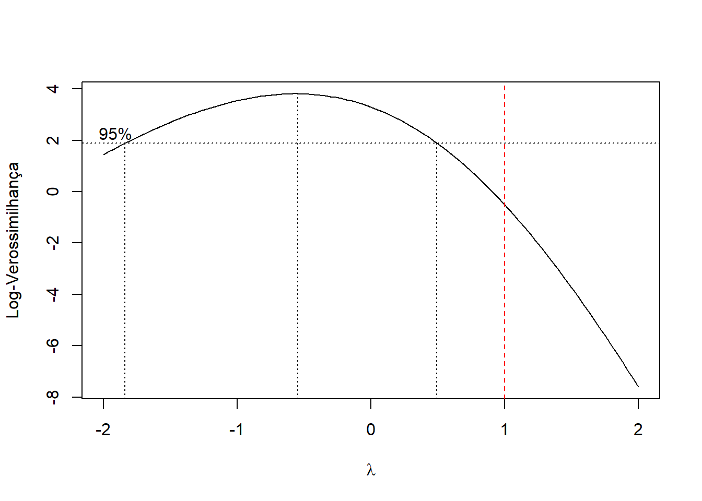
Depois de realizada a transformação, um novo modelo deve ser ajustado aos dados transformados e sua adequacidade deve ser avaliada.
Anova Table (Type II tests)
Response: 1/sqrt(y)
Sum Sq Df F value Pr(>F)
x1 0.00179467 1 12.7947 0.002753 **
x2 0.00000032 1 0.0023 0.962599
Residuals 0.00210400 15
---
Signif. codes: 0 '***' 0.001 '**' 0.01 '*' 0.05 '.' 0.1 ' ' 1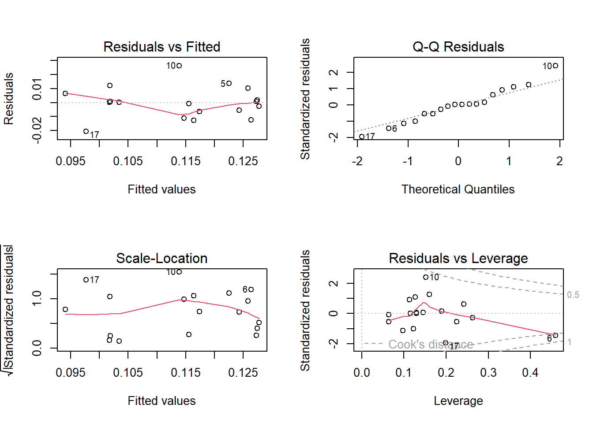
Vocês devem ter notado que, para o exemplo 2, só foi feito o gráfico apresentado na Seção 2.1. Assumindo o modelo:
\[ y_{ij} = \beta_{0} + \beta_{1}x_{1i} + \beta_{2}x_{2j} + \beta_{3}(x_{1}x_{2})_{ij} + \varepsilon_{ij} \]
em que \(x_{1}\) é o efeito do tipo, \(x_{2}\) é o efeito do tratamento e \(\varepsilon_{ij} \sim N(0, \sigma^{2})\), obtenha os outros gráficos apresentados nessa aula a fim de verificar a adequacidade do modelo.
Caso os pressupostos sejam violados, encontre uma transformação adequada da família Box-Cox, ajuste o modelo novamente e estude as diferenças entre os dois ajustes (variável original e variável transformada).